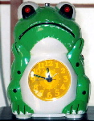
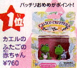
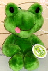
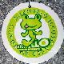
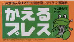
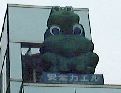

|
力みなぎるカエル度爆発！韓国カエル目覚まし時計！ 【横浜発=ケグリ同志記者】私が愛用している目覚まし時計です．日常使っているものなので口や足の先の塗料がはげていてキレイではありません。とはいっても別にキスしているわけじゃないですが。。。韓国のソウルで買ってきました。だから設定された時間になると韓国語でしゃべります。「フー，ポルソ・アチミヤ〜．オヌルド・ヒムチャン・ハル！」と読み、「ふー，もう朝だ．今日も力みなぎる一日！」という意味です．上のかえる時計の画像をクリックすると音を聞くことができます(約280K)
偉大なカエル目覚ましを支持！日韓で大増産を！【全国かえる奉賛会】さすがだ。同じ儒教で育った隣国・韓国！発想が素晴らしいではないかあ。おっさんの声で『今日も力みなぎる一日！』。これはすごい。日韓の時計生産メーカーは、腕時計や高級時計、デジタル時計の生産ラインを停止して、いますぐに、全社挙げてこの会社の時計を下請けで増産しようではないかああ。従業員の宿直を伴う事業所では、この時計の購入を義務付けるぞー。国内のすべての工場、事業所は、この目覚ましを購入しよう。重工業産業は、ただちに高さ４０メートル、ウルトラマン大の『韓国カエル目覚まし時計特大発展型』を製造して日本全土の企業の玄関に設置。巨大なスピーカーで毎朝、午前６時６分（カエル記念時刻）になったら、『今日も力みなぎる一日！』と叫んでもらおうではないかあ。
デフレにあえぐ我が国は、この時計で全国民が早朝出勤し、工場を全力操業してカエル目覚まし時計を大増産する時期なのであるーっ！！。
エポック社にカエルファミリー誕生！ 【埼玉発=ケロッピー・セブン＆十二オタマ同志記者】エポック社のシルバニアシリーズはご存じでしょうか？カエラーとしての英才教育を施している姪が「おじちゃん、こんなのがあるよ」と言って持ってきたのがシルバニアファミリークラブの会報でした。これまでのイヌ、ネコ、クマ、ウサギ、リス等に加えてカエルファミリーが誕生する様子です。カエルは現在は通販で赤ちゃんのみだそうですが、人気Ｎｏ．１のようです。
【全国かえる奉賛会】おおーエポック社といえば、大王も幼少のころに『日本海海戦ゲーム』（ロシア艦隊の軍艦が浦塩に入港するのを３隻以下にするのが勝利条件）で馴染みが深い著名ゲームメーカーであるな。いつのまにかカエル化していたなんてうれしいではないかあ。
携帯にはカエルのモローストラップ！【福岡発=走るかえる同志記者】携帯電話持っている人が、このごろさらに急激に増えているらしい。ということで、新型携帯を手にしたら、ストラップはカエルにしましょーっ！けろテン市場で発売しているので、モローストラップで同僚と差をつけようではありませんかあ。
 気になるカエル！君の名は『マイケロ』！【神奈川発=ひなひな同志記者】かえる新聞平成13年3月20日号で公開捜査されていた気になるカエルの名前ですが「MICHELLO（マイケロ）」だと思います。
 色違いなのですがこのカエルのぬいぐるみを持っているので、ぬいぐるみの画像とぬいぐるみについていたタグの画像を送ります。
北九州カエルプレスが発刊！ 【北九州発=カエルのガーデナー甚六同志記者】大王様はご存じですか？
私の住んでいる北九州市では『かえるプレス』という新聞が年２回、市政だよりと一緒に配布されます。内容は、環境に関するお知らせで、最新の第１４号では、家電リサイクル法について特集されています。
【全国かえる奉賛会】何を隠そう、大王は北九州市の生まれなのだあああああ。出生地の都市が『かえるプレス』を発行するなんて、うれしいではないかあ。『かえる新聞』と並ぶカエル系新聞として、市民のカエル化推進に尽力してくれー。担当部署の方が見ていたら見本紙を配達してくれい！
春雨に喜ぶ銀座の「安全カエル」！ 【横浜発=ケグリ同志記者】本日、銀座を歩いていたら，三越の前の交差点の交番の上に「安全カエル」というのを発見しましたのでご報告いたします。小雨まじりの曇天のためあんまり鮮明ではありませんが。。。。
【全国かえる奉賛会】平成9年6月14日号で紹介された、銀座のカエルは、可愛いのと、ほっとするので、銀座に出るととってもうれしいのである。元気にしてるかなー。春雨に濡れて楽しそうではないかあ。ケグリ同志記者！近況報告ありがとー。
投稿採用者に武功カエル徽章を授与！ |
かえる古新聞過去に取り上げた記事を見出し付きで一覧したい人は、ここをクリック◆創刊号を見る◆先週号を見る◆話題の号を見る◆かえる新聞の昔を読む◆COOL NET FROG RANKING !
|
私も入っています。。全国かえる奉賛会
大王様に会うには、このバナーをクリック。ずっと奥に写真館があるぞ。全国かえる奉賛会に入会するには、自分のホームページのどこかに、下の部分を追加するとバナーがリンク付きで表示されるぞ。どんどん入会しましょー |


|